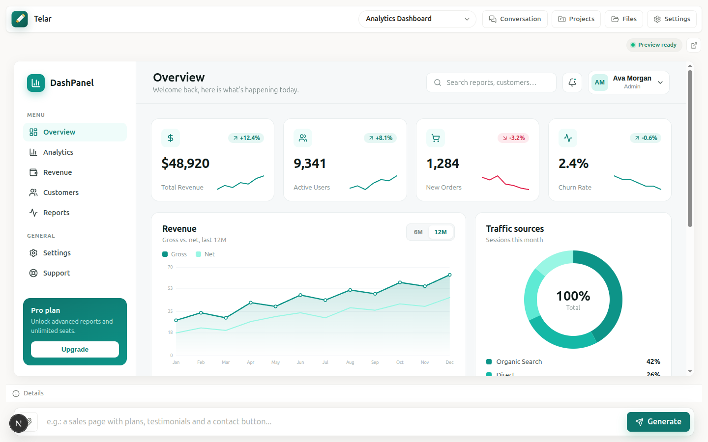

Weave interfaces
from a single prompt.
Telar is Portuguese for loom. Describe a screen and it weaves the code — a real, editable React app rendering live in your browser. Local-first, bring your own AI.
No account. No backend. Your projects live in the browser.

Prompt to UI
Describe a screen in plain language and get a complete, editable React project — not a screenshot, real code.
Live in-browser preview
The generated app runs instantly via WebContainers — a full Vite dev server, right in your tab.
Local-first & private
Projects live in your browser (IndexedDB). You bring your own AI key or a local CLI. Nothing is uploaded.
Real screens, one sentence each
Every screen below was generated from a single English prompt and rendered live — no hand-written code.
A workspace, not a toy
- 🧵
Prompt to UI
Describe a screen and get a complete, editable React project.
- 👀
Live preview
Runs in-browser via WebContainers, with a light mock mode for tests.
- 🗂️
Projects
Create, switch, rename and delete — each keeps its own history.
- ⏪
Versions
Every generation is a restorable snapshot.
- 📎
References
Attach text and image files to guide generation.
- 🧠
Bring your own AI
OpenAI, Anthropic (Claude), or a local Claude / Codex CLI — no key needed.
- ✍️
Generation skills
Ships with a frontend-design skill or loads a custom SKILL.md.
- 📦
Export
Download the whole project as a ZIP.
- 🌐
Internationalization
English and Portuguese, auto-detected and switchable.
- 🎨
Calm, light UI
A “Canvas + Dock” layout that keeps the preview center stage.
From words to working app
Describe
Type the screen you want — attach references if it helps.
Generate
Your AI weaves a full React project, file by file.
Preview & export
See it live, iterate, restore versions, ship a ZIP.
Up and weaving in a minute
Telar runs on your machine — Node 20+ and npm. Open Settings, pick a provider and paste your key, or select a detected local CLI.
🧠 Bring your own AI: OpenAI, Anthropic (Claude), or a local Claude CLI / Codex CLI binary — no API key required.
Read the docs on GitHub# clone & install
$ git clone https://github.com/renanmpimentel/telar.git
$ cd telar
$ npm install
# start the workspace
$ npm run dev
▲ ready on http://localhost:3000- Next.js 16
- React 19
- TypeScript
- WebContainers
- Vitest
- Playwright